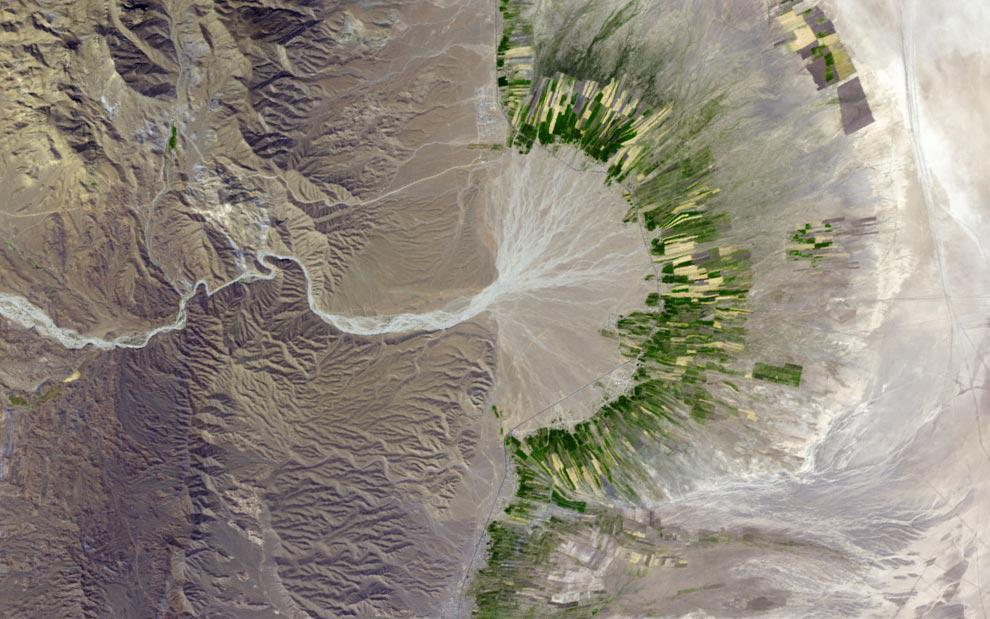

Skip to main content
Toggle navigation
Biosystems Engineering Blog
About
(active)
Blog
Tags
GitHub
Kurt Kremitzki
Education: Texas A&M University
Biological & Agricultural Engineering
Biosystems Engineering Interests
Precision Agriculture
Control Theory
Ecosystem Engineering
Software Engineering Interests
Python
,
Data
, and
Networks
System Administration
and
Linux
Embedded Systems
DevOps
FreeCAD

Fars Province, Iran. October 12, 2004. (NASA/Jesse Allen, NASA/GSFC/METI/ERSDAC/JAROS, U.S./Japan ASTER Science Team)